数据流图（DFD）描绘系统逻辑模型，图中没具体的物理元素，只描绘信息在系统中流动处理情况。是非常好通信工具和软件设计出发点。
1.符号
1.1四种基本符号
（1）正方形（或立方体）
表示数据的源点或终点。（人员、部门、计算机外部设备或传感器装置）
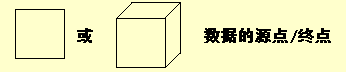
（2）圆角矩形（圆形）
代表变换数据的处理；（一系列程序、单个程序或程序一个模块；人工处理过程）
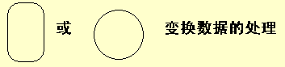
（3）开口矩形（两条平行横线）
代表数据存储。（文件、文件一部分、数据库元素或记录一部分，可存在磁盘、磁带、磁鼓、主存、微缩胶片任何介质上。）
（4）箭头
表示数据流，即特定数据的流动方向。（在处理之间有向流动的数据项或数据集合。）
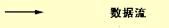
1.2一个简单的数据流图
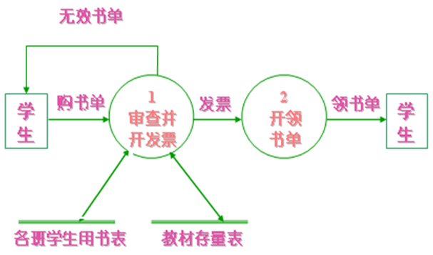
1.3附加符号
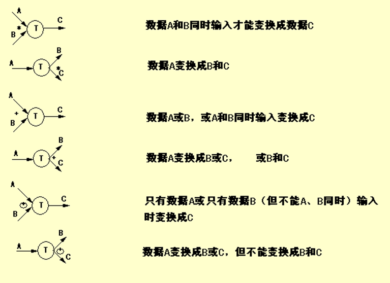
2.范例
2.1问题
工厂采购部采购员每天需一张定货报表，按零件编号排序列出所需定货零件。
对定货零件列下述数据：零件编号、名称、定货数量、目前价格，主次要供应者等。
零件入库或出库称事务，通过仓库终端把事务报告定货系统。零件库存量少于库存临界值需订货。
2.2解法
（1）从问题描述提取数据流图四种成分
- 先考虑源点和终点
- 再考虑处理
- 最后考虑数据流和数据存储
如：
- 源点：仓库管理员
- 终点：采购员
- 处理：处理事务、产生报表等
- 数据流：事务、订货信息、订货报表等
- 数据存储：订货信息、库存信息
（2）着手画数据流图的基本系统模型
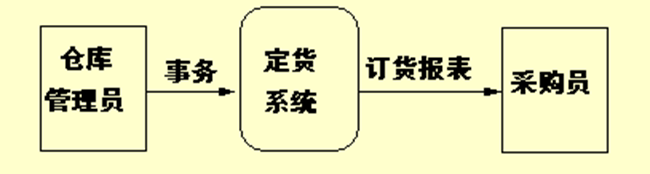
（3）把基本系统模型细化，描绘系统主要功能
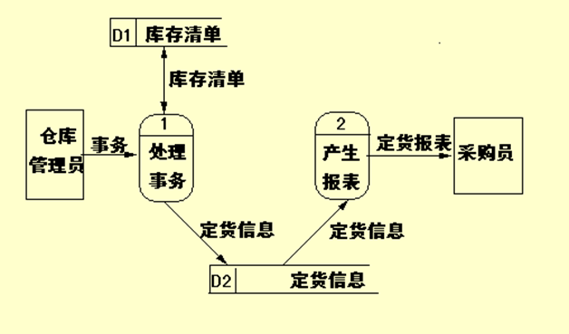
（4）主要功能进一步细化
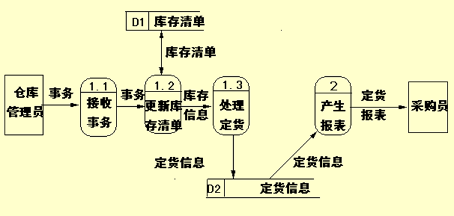
（5）结束、进一步分解涉及如何具体实现功能时，不应再分解
3.分层数据流图
为表达数据加工情况，需采用层次结构数据流图。
顶层数据流图包含一个加工项；
底层流图指加工项不再分解的数据流图；
中间层流图只在顶层和底层之间，对其上层父图的细化。
3.1示意图
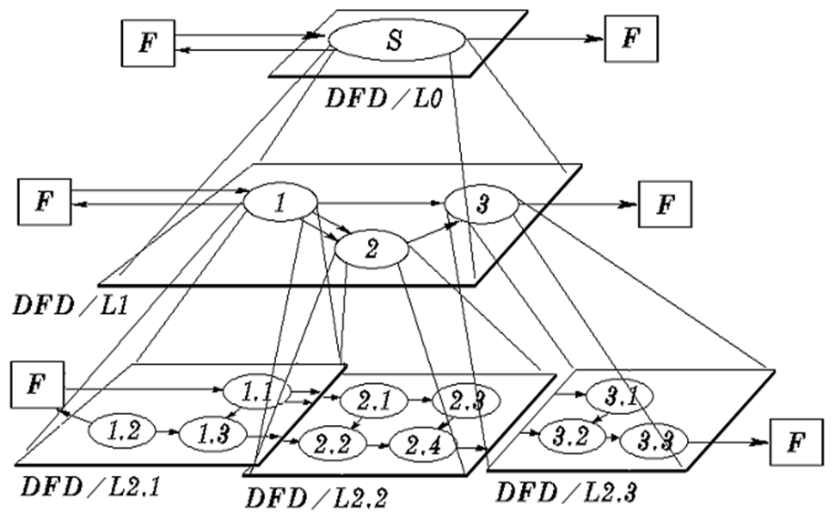
3.2 分层法绘制流程图的几个问题
（1）编号的设置
子图的编号是父图相应的处理逻辑的编号。
子图中处理逻辑编号由子图号、小数点与局部号组成。
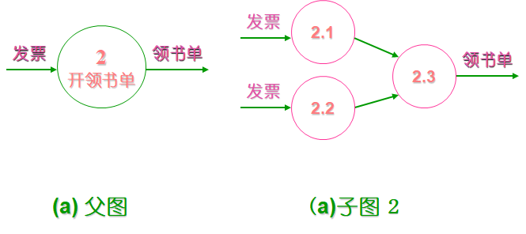
（2）父图与子图的平衡
子图详细地描述父图中处理逻辑
子图的输入、输出数据流应同父图处理逻辑的输入、输出数据流相一致。
（3）局部数据存贮
在子图中出现的数据存贮，可以不出现在父图中，画父图时只需画出处理逻辑之间的联系，不必画出各个处理逻辑内部的细节。
4.命名规则
4.1数据流（数据存储）命名
（1）用名词，区别于控制流。
（2）代表整个数据流（数据存储）内容，不仅仅反映某些成分。
（3）不用缺乏具体含义名字，如“数据”、“信息”。
4.2 处理命名
（1）用动宾词组，避免使用“加工”、“处理”等笼统动词。
（2）应反映整个处理的功能，不是一部分功能。
（3）通常仅包括一个动词，否则分解。
4.3数据源点／终点
不属于数据流图的核心内容，可能是人员、计算机外部设备或传感器装置。采用它们在问题域中习惯使用的名字（如“采购员”、“仓库管理员’等）。
5.用途
5.1 作为交流信息的工具
5.2作为分析和设计的工具
用数据流图辅助物理系统设计时，可在数据流图上画出许多组自动化边界，每组自动化边界可能意味着不同的物理系统。
自动化边界划分方案一
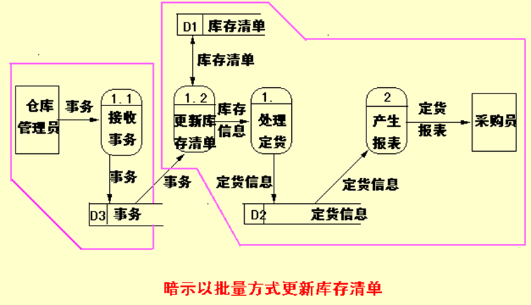
自动化边界划分方案二
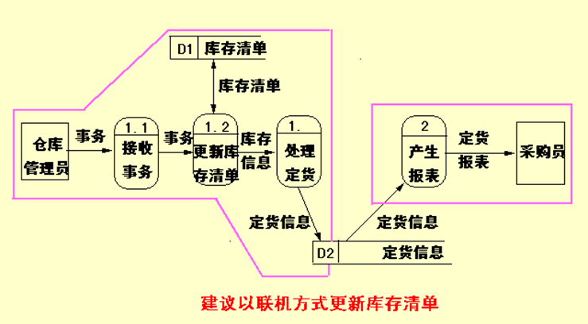
6.习题
6.1 问题
工资计算系统包含如下功能：
（1）计算工资
根据人事部门给出的出勤表和业绩表计算奖金和缺勤扣款，通过生成的奖金发放表及工资基本信息库的信息计算应发工资，根据应发工资表计算所得税，根据后勤部门给出的水电扣款及缺勤扣款表和所得税款计算出实发工资，生成实发工资表和工资清单。
（2）打印工资清单
根据工资清单完成工资条的打印，给职工
（3）工资转存
根据实发工资表生成职工工资存款清单并将其发送到银行
请用数据流图描绘该系统。
6.2顶层数据流图
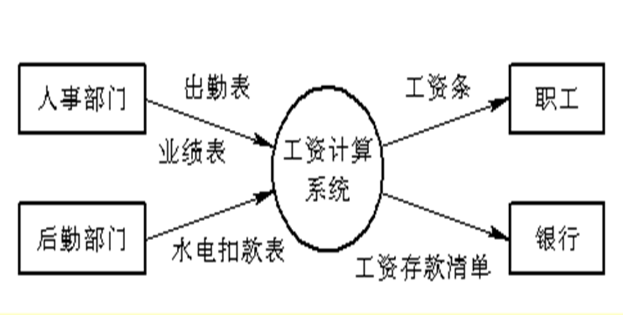
6.3功能级数据流图
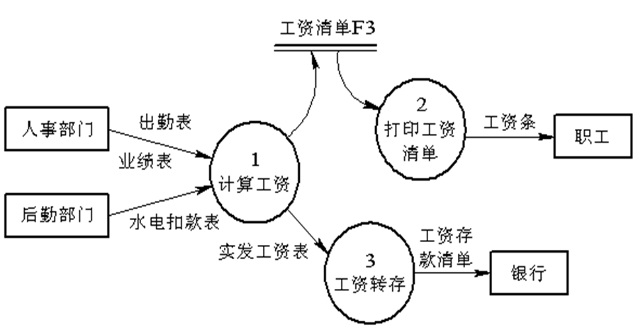
6.4 细化功能级数据流图
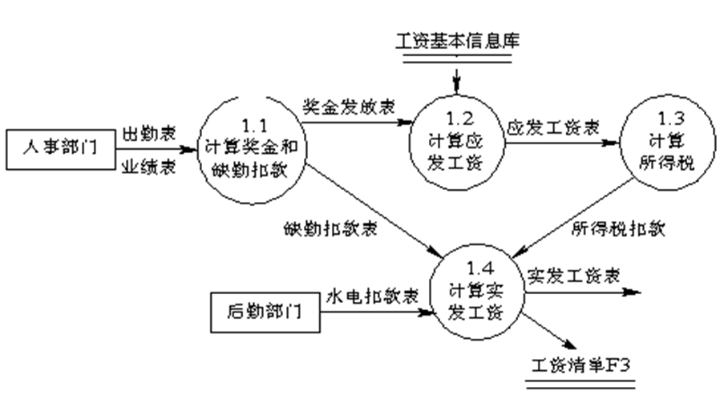
6.5细化功能级数据流图
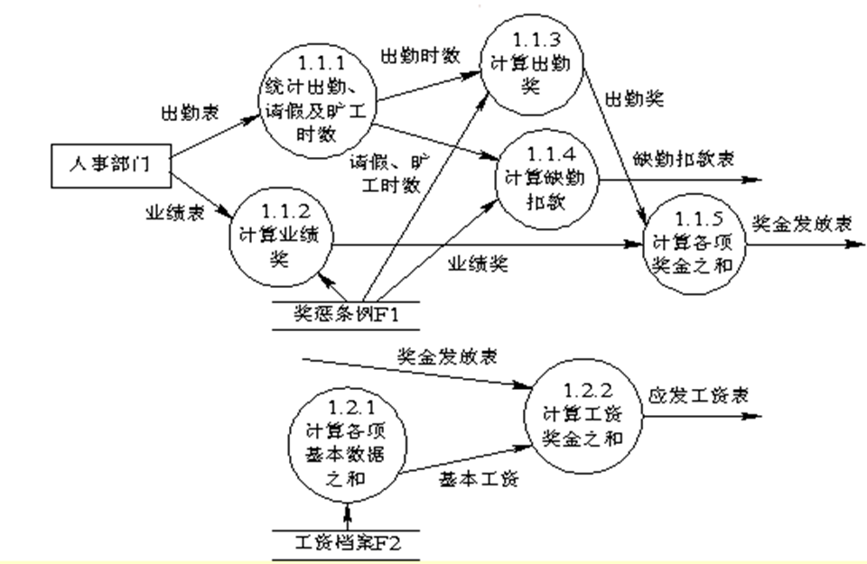